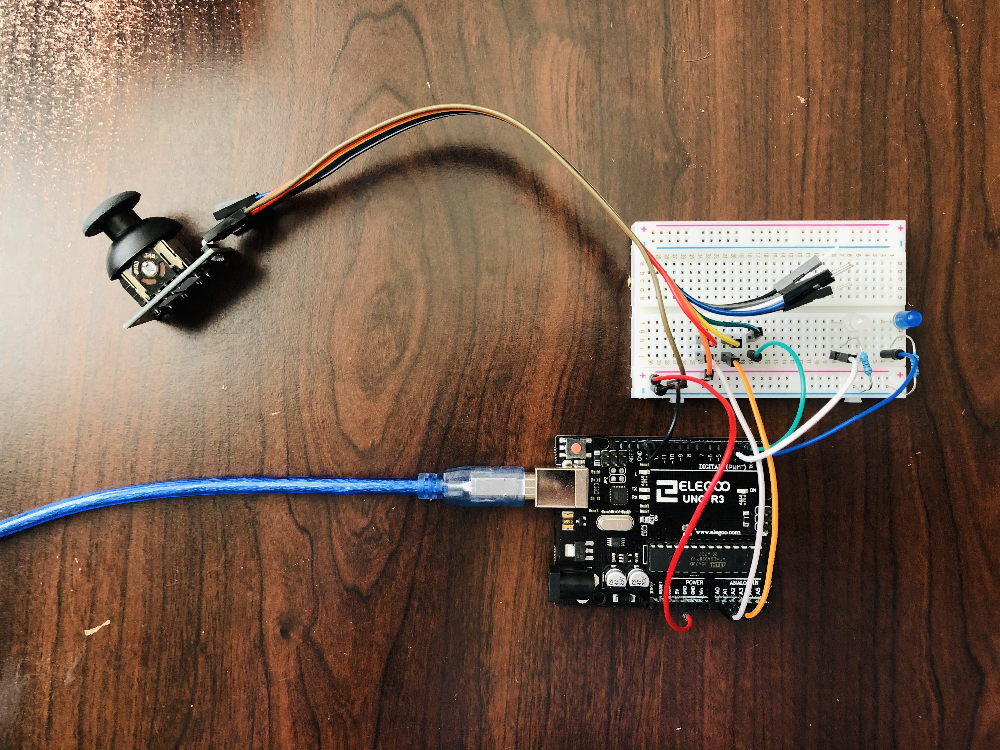
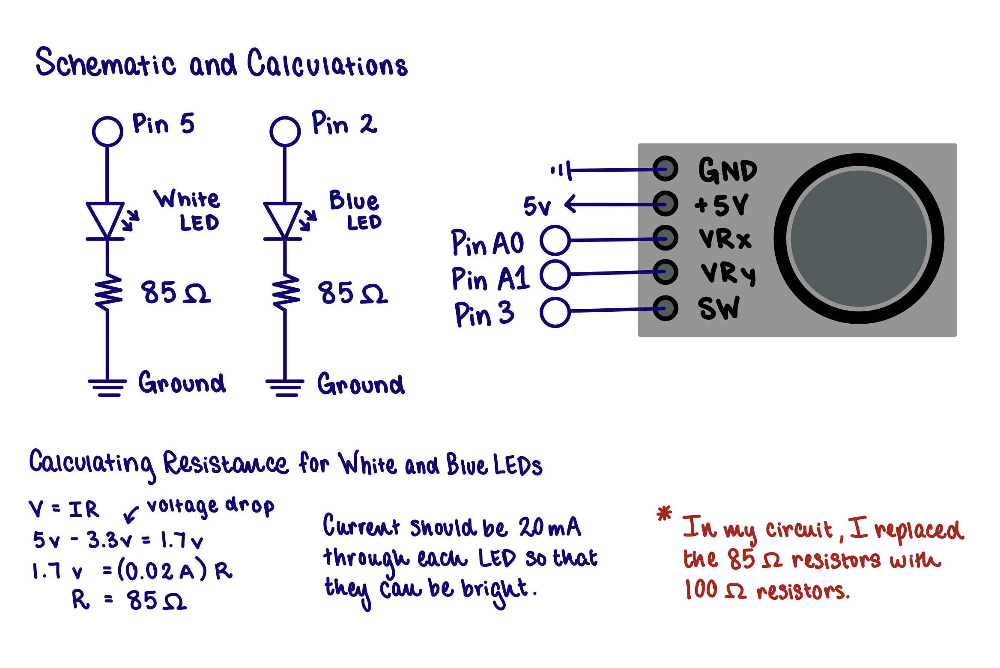
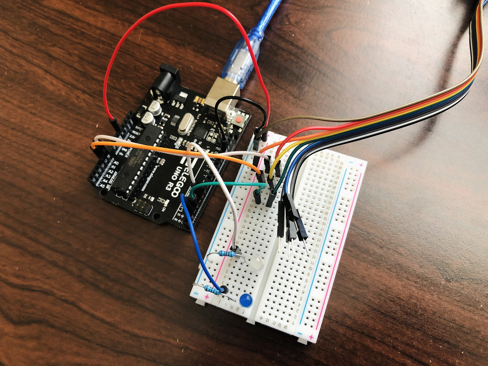
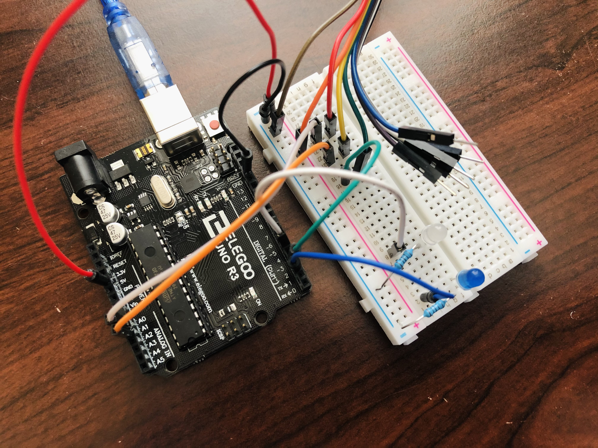
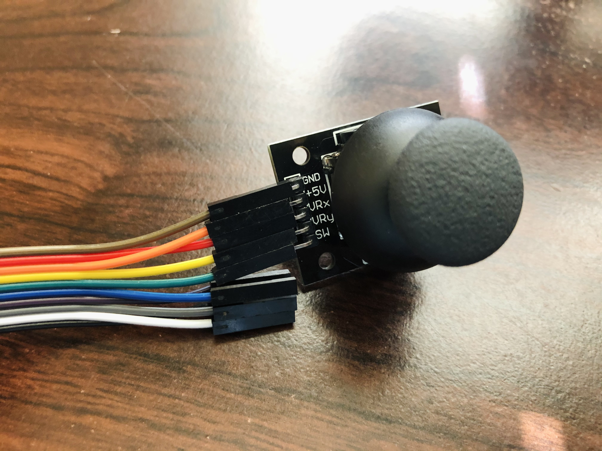

Back to Home Page
Assignment 6: Talking to the Web!

The Goal Web to Arduino: Press keys on the keyboard to turn on/off and blink LEDs! Arduino to Web: Interact with the joystick to draw ellipses across the screen of increasing width and variable height. The Schematic and Calculations
The schematic includes a white LED, a blue LED, and a joystick. Resistors control the current flowing through the LEDs for optimal brightness. The Circuit



Here's what the circuit looks like on the Arduino and breadboard! The Code Access the code above! There are 4 files total. The P5 code is indicated in the file name. See It In Action!